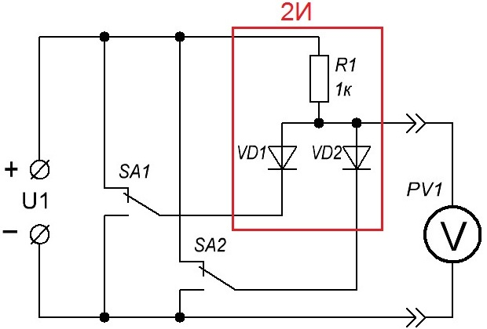
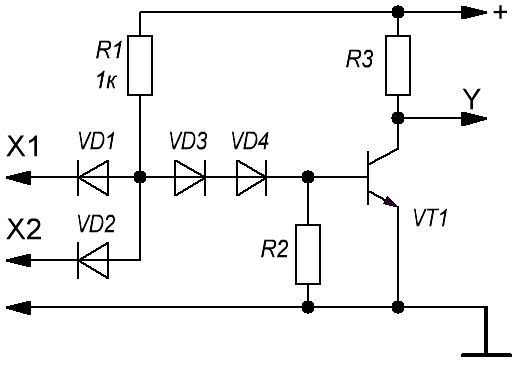
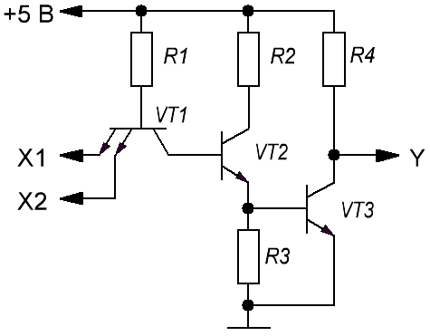
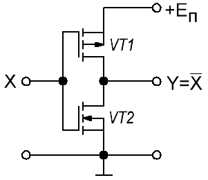
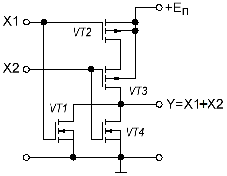
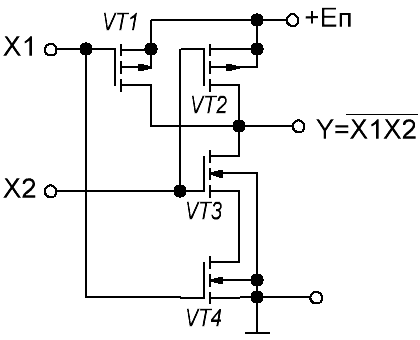

Схемотехника логических элементов
В зависимости от используемых полупроводниковых приборов и способов связи их в логическую схему, а также связи между логическими элементами различают логические элементы и логические микросхемы. Так, в биполярных логических ИС используют резистивно-транзисторную (РТЛ), диодно-транзисторную (ДТП), транзисторно-транзисторную (ТТЛ), эмиттерно-связанную (ЭСЛ) и интегральную инжекционную (И2Л) логику, а в МОП – схемотехнику на рМОПТ с обогащением (рМОП ИС), на nМОПТ с обогащением и обеднением (nМОП ИС) и на комплементарных МОПТ (КМОП ИС).
В современной электронике применяют наиболее совершенные логические ИС, основными из которых являются типа ТТЛ, И2Л, ЭСЛ, nМОП и КМОП.
Диодно-резистивная логика
Рассмотрим принципиальную схему логического элемента 2И (рис. 1) диодно-резистивной логики, построенного на диодах и резисторах. Для простоты рассмотрения будем считать, что напряжение логического «0» на входе элемента равно 0 В, а напряжение логической «1» - 5 В. Внутреннее сопротивление вольтметра значительно больше сопротивления резистора R1.

При обратном напряжении ток, протекающий через диод, составляет десятые доли микроампера. Напряжение на диоде при протекании через него в прямом направлении тока в десятки миллиампер, равно приблизительно 0,7-0,8 В.
Если на оба входа схемы поданы напряжения логических «1», то токи через диоды VD1 и VD2 не протекают, и напряжение на выходе элемента при условии, что сопротивление нагрузки значительно больше сопротивления резистора R1, будет примерно равно напряжению питания. Если хотя бы один из входов элемента соединить с минусовым проводом источника питания, то на выходе элемента в случае кремниевых диодов будет напряжение 0,7 - 0,8 В (зависит от сопротивления резистора R1 и напряжения источника питания).
Примечание: для рассмотренного логического элемента логическая «1» на входе будет, если вход никуда не подключен или подключен к плюсовому выводу источника питания.
Диодно-транзисторная логика
Следующим этапом совершенствования элементной базы цифровой техники было создание логических элементов диодно-транзисторной логики (ДТЛ). На рисунке 2 приведена принципиальная схема логического элемента 2И-НЕ диодно-транзисторной логики.

Зависимость тока коллектора транзистора от напряжения база-эмиттер при постоянном напряжении эмиттер-коллектор имеет примерно такой же вид, как и прямая ветвь вольтамперной характеристики полупроводникового диода. Для кремниевых транзисторов при напряжении база-эмиттер (в прямом направлении) менее 0,5 В ток в цепи коллектор-эмиттер практически равен нулю при любых допустимых напряжениях коллектор-эмиттер (транзистор закрыт, сопротивление между коллектором и эмиттером закрытого транзистора VТ1 может достигать единиц МОм). При незначительном увеличении напряжения база-эмиттер (в прямом направлении) более 0,5 В ток коллектора значительно увеличивается, говорят, что транзистор открывается.
Диоды VD1, VD2 и резистор R1 (рис. 2) образуют логический элемент 2И. Роль инвертора выполняет транзистор VT1. Если транзистор закрыт, то ток в цепи: плюс источника питания, резистор R2, коллектор-эмиттер транзистора VT1, минус источника питания не протекает и напряжение между эмиттером и коллектором транзистора будет равно напряжению на зажимах источника питания. Диоды VД3, VД4 необходимы для надежного закрытия транзистора VТ1, когда хотя бы на одном из входов элемента было напряжение логического нуля.
Если на обоих входах Х1, Х2 присутствуют сигналы логических единиц, транзистор VT1 открывается током базы, протекающим по цепи: плюс источника питания, резистор R1, диоды VD3, VD4, переход база-эмиттер транзистора VT1, минус источника. На выходе элемента будет напряжение 0,1-0,2 В, что соответствует логическому нулю.
Транзисторно-транзисторная логика (ТТЛ)
Схемы транзисторно-транзисторной логики базируются на биполярных транзисторах n-p-n-структуры. Базовым элементом (рис. 3) данной технологии является схема И-НЕ. Логическое умножение осуществляется за счет свойств многоэмиттерного транзистора VT1. При подаче хотя бы одного логического нуля на эмиттеры этого транзистора замыкается цепь:
+5 В → сопротивление R1 → переход база-эмиттер → земля на входе.
При этом транзисторы VT2 и VT3 остаются закрытыми. Поэтому выходная цепь не замкнута, падения напряжения в ней нет, следовательно, в точке Y на выходе схемы будет потенциал источника питания, т.е. логическая единица. Выполняется правило И-НЕ: при подаче хотя бы одного нуля на выходе схемы получили логическую единицу.

При подаче логической единицы на все входы схемы замыкается цепь:
+5 В → сопротивление R2 → транзистор VT2 → сопротивление R4 → земля.
Следовательно, на базу выходного транзистора VT3 подается потенциал, достаточный для его открытия (соответствует падению напряжения на сопротивлении R3). Через открытый транзистор VT3 замыкается буферная цепь:
+5 В → сопротивление R3 → транзистор VT3 → земля.
Следовательно, на выходе Y будет потенциал, соответствующий падению напряжения на открытом транзисторе VT3, т.е. 0.4 В. Таким образом, Y=0.
Логика на комплементарных металл-оксид-полупроводник полевых транзисторов (КМОП)
Базовая схема КМОП–инвертора показана на рис. 4. Данная схема инвертора является основой для построения логических элементов других типов. Схема включает два МОП–транзистора с индуцированным каналом с разной проводимостью каналов и объединенными затворами.
Если на вход подать высокий уровень сигнала (Х=1), то напряжение на затворе транзистора VT2 превысит пороговое, а на затворе VT1 будет ниже порогового. Поэтому транзистор VT2 откроется и выход схемы окажется подключен к шине “земля” через открытый транзистор VT2, а транзистор VT1 будет заперт. В результате на выходе будет низкий уровень напряжения (Y=0).
При подаче низкого входного уровня сигнала (Х=0), состояние транзисторов меняется на противоположное. Теперь выход инвертора окажется подключенным через открытый транзистор VT1 к шине питания и на выходе будет высокий уровень напряжения (Y = 1).
Благодаря применению полевых транзисторов с изолированным затвором для управления КМОП–микросхем требуются очень низкие мощности сигналов, так ток затвора не превышает 1 нА.

На рис. 5 приведена схема, реализующая функцию 2ИЛИ-НЕ. В схеме ИЛИ-НЕ инвертор на транзисторах VT3 и VT4 подключается к шине питания через транзистор VT2. При подаче на оба входа низкого уровня транзисторы VT4 и VT1 запираются, а транзисторы VT2 и VT3 отпираются. Следовательно, на выходе появится высокий уровень напряжения. Если на один или оба входа подают напряжение высокого уровня, транзисторы VT2 и VT3 запираются, а один или оба нижних транзистора открываются, и на выходе будет низкий уровень напряжения.

В схеме И-НЕ (рис. 6) инвертор на транзисторах VT2 и VT3 подключается к шине “земля” через транзистор VT4, а VT1 подключается параллельно верхнему транзистору инвертора. При подаче на один или оба входа напряжения низкого уровня один из нижних транзисторов будет всегда заперт, а один из верхних открыт и на выходе будет высокий уровень напряжения. Для получения низкого уровня напряжения на выходе необходимо, чтобы оба нижних транзистора были открыты, а оба верхних транзистора – закрыты. Такое состояние возможно только в том случае, если на оба входа одновременно подается высокий уровень напряжения.

В КМОП–сериях также имеются логические элементы с открытым стоком и с тремя выходными состояниями.
Источники
studwood.net - Комбинационные схемы и цифровые автоматы: логические элементы